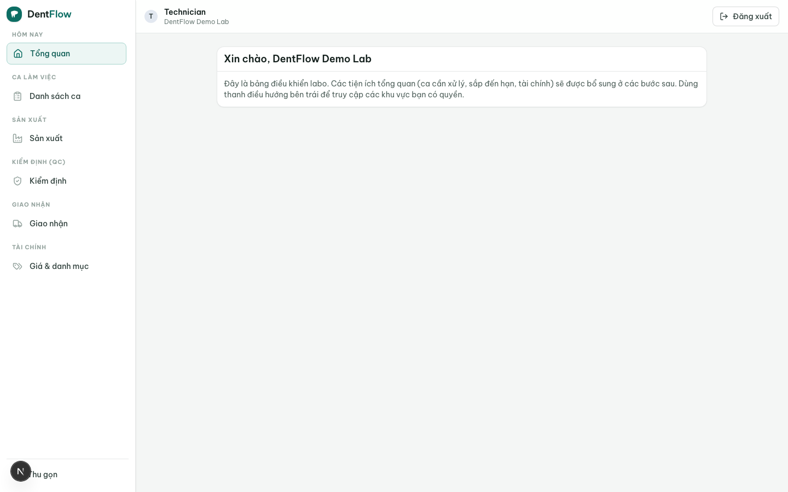

Vai trò & phân quyền
Ai thấy gì, ai làm được gì trong labo — không dựa vào lời hứa, mà dựa vào một bộ role rõ ràng gán cho từng người.
Mọi người trong labo đăng nhập bằng loginId (tên đăng nhập), không bằng email. Mỗi user thuộc đúng một lab và mang một hoặc nhiều lab role; quyền thao tác của họ được hệ thống giải ra từ tập lab permission của các role đó. DentIQ Lab seed sẵn một bộ role mặc định khớp với các vị trí thật trong labo, để bạn dùng ngay mà không phải tự dựng quyền từ đầu.

Đăng nhập bằng loginId
Danh tính đăng nhập là loginId (tên đăng nhập), lưu chuẩn hoá chữ thường và duy nhất toàn hệ thống. Email là tuỳ chọn. Vì loginId là duy nhất nên đăng nhập không nhập nhằng, và labo VN không bắt buộc mọi kỹ thuật viên phải có email riêng.
- Một user → đúng một lab. Không có thành viên đa-lab, không chuyển lab: mỗi user được cấp loginId để đăng nhập vào labo duy nhất của mình.
- Handle bị cấm bị từ chối. Các tên nhạy cảm (vd
admin,owner,support) bị chặn ngay khi tạo tài khoản. - Một user mang một hoặc nhiều role. Ví dụ một người vừa làm điều phối vừa kiêm QC ở labo nhỏ — quyền hiệu lực là hợp của các role.
Bộ role mặc định
Mỗi lab được seed sẵn sáu role, khớp với các vị trí thật trong xưởng. Mỗi role có code (định danh máy, cố định — dùng để gác vòng đời case) và name (nhãn hiển thị).
| Role | Là ai | Quyền chính |
|---|---|---|
lab_admin | Chủ labo | Toàn quyền — không sửa/xoá được (systemProtected). Cấu hình bảng giá, vật liệu, người dùng, xem doanh thu/công nợ/năng suất. |
coordinator | Quản lý / điều phối | Tiếp nhận work order, phân technician, đặt hạn, chuyển trạng thái case, điều phối sản xuất. |
technician | Kỹ thuật viên | Cập nhật tiến độ công đoạn được giao (milling/sinter/polish…). Không thấy giá vốn, công nợ. |
qc | Kiểm định (QC) | Chấm cổng QC, ghi pass/fail + ảnh bằng chứng, ghi phôi/lô trước khi cho case đi giao. |
shipper | Giao nhận | Cập nhật trạng thái giao, xác nhận đã giao (delivered). |
accountant | Kế toán labo | Quản công nợ, chốt kỳ, phát hành sao kê / hoá đơn điện tử, ghi nhận thanh toán. |
Role chủ lab_admin không sửa được: nó được cấp toàn bộ lab permission liệt kê tường minh (không dùng wildcard). Năm role còn lại sửa được — bạn có thể chỉnh tập quyền của từng role theo cách labo mình vận hành.
Quyền được giải ra từ lab permission
Một lab role thực chất là một tập lab permission — đơn vị cấp quyền nhỏ nhất, mỗi mã khoá một thao tác cụ thể. Quyền hiệu lực của một user là hợp của permission từ mọi role họ mang. Danh mục quyền phạm vi lab gồm 14 mã, nhóm theo mảng chức năng:
| Nhóm | Lab permission (mã) | Cho phép |
|---|---|---|
| Case | case.read, case.create, case.transition, case.assign, case.sample, case.material, case.deposit | Xem/tạo case, chuyển trạng thái, phân công, ghi mẫu/ảnh, ghi material, ghi đặt cọc. |
| Clinic | clinic.read, clinic.manage | Xem và quản lý quan hệ với phòng khám (cạnh clinic↔lab). |
| Catalog | catalog.material.manage, catalog.price.manage | Quản lý danh mục vật liệu và bảng giá. |
| Access | roles.manage, users.manage | Quản lý role và người dùng của labo. |
| Settings | lab.settings.manage | Chỉnh cấu hình chung của labo. |
Quyền phạm vi nền tảng (scope='system', dành cho superadmin) không bao giờ lộ cho một labo — đây là cơ chế ẩn: một labo không thể thấy, xin, hay được cấp quyền nền tảng. Bạn chỉ làm việc với các quyền scope='lab' ở trên.
Role nào chạm quyền nào (tham khảo)
Bảng dưới là gợi ý tập quyền hợp lý của mỗi role mặc định (chủ labo có tất cả); bạn có thể chỉnh 5 role sửa được cho khớp thực tế labo mình:
| Permission | lab_admin | coordinator | technician | qc | shipper | accountant |
|---|---|---|---|---|---|---|
case.read | ✓ | ✓ | ✓ | ✓ | ✓ | ✓ |
case.create | ✓ | ✓ | — | — | — | — |
case.transition | ✓ | ✓ | ✓ | ✓ | ✓ | — |
case.assign | ✓ | ✓ | — | — | — | — |
case.material | ✓ | ✓ | ✓ | ✓ | — | — |
catalog.price.manage | ✓ | — | — | — | — | ✓ |
catalog.material.manage | ✓ | ✓ | — | — | — | — |
roles.manage / users.manage | ✓ | — | — | — | — | — |
lab.settings.manage | ✓ | — | — | — | — | — |
Lưu ý: code của các role khớp với ROLE trong máy trạng thái case + bảng giá, nên vòng đời case và gác giá vẫn giải đúng dù bạn đổi name hiển thị. Các dấu ✓/— ở đây là mặc định gợi ý, không phải luật cứng — chủ labo tinh chỉnh được cho 5 role sửa được.
Một người dùng "không thấy" một màn hình thường không phải lỗi — đó là quyền hoạt động đúng (mặc định từ chối). Muốn họ thấy thêm, gán role phù hợp hoặc bổ sung permission cho role đó. Chỉ lab_admin quản lý được role và người dùng. Riêng lab_admin không sửa/xoá được để labo không bao giờ mất đường vào toàn quyền.